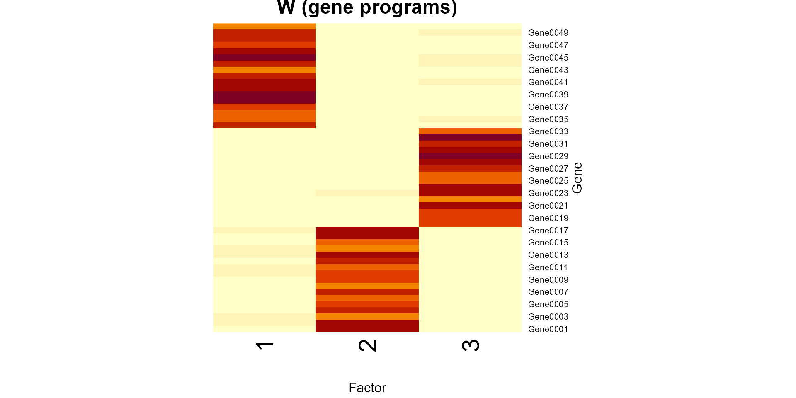
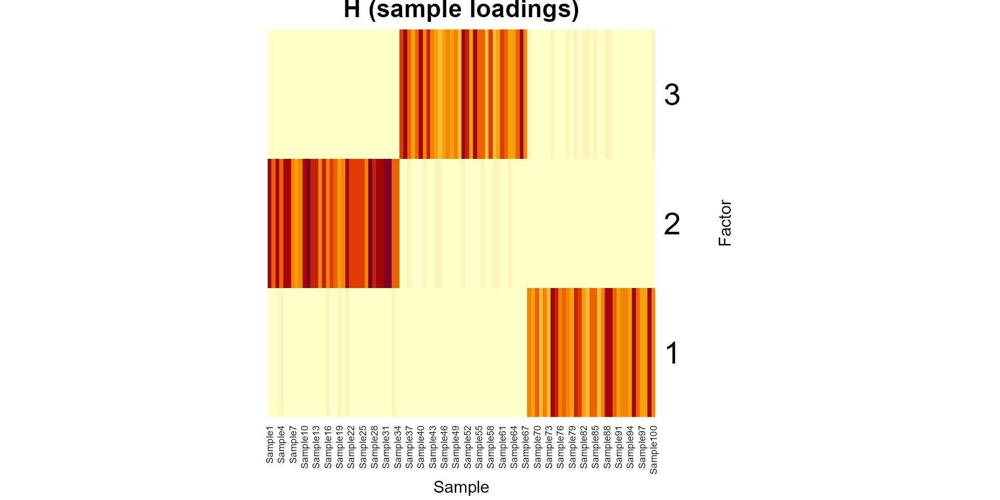

bionmf.Rmdbionmf fits non-negative matrix factorization (NMF) to a gene-by-sample expression matrix. The model is
The fit uses Lee–Seung multiplicative updates under the Frobenius loss, implemented in base R.
library(bionmf)The package ships a simulated matrix (50 genes
100 samples, with 3 distinct expression patterns) as
inst/extdata/expression_matrix.csv. Use
expression_matrix_path() so the file is found after
install, without hard-coded working-directory paths.
path <- expression_matrix_path()
V <- load_expression_matrix(path)
dim(V)
#> [1] 50 100load_expression_matrix() checks that values are
non-missing and non-negative, which NMF requires.
Choose a factorization rank (number of programs), a maximum number of iterations, and a relative-error tolerance. A seed makes the random initialization reproducible.
fit <- run_nmf(
V,
rank = 3L,
max_iter = 200L,
tol = 1e-4,
seed = 42L
)
fit$iterations
#> [1] 128The result is a list with factor matrices and the error trajectory:
fit$W — genes
factorsfit$H — factors
samplesfit$error_history — Frobenius error after each
iterationfit$iterations — number of updates performed (may stop
early)Reconstruction quality is summarized by the Frobenius residual and by the fraction of variance explained.
reconstruction_error(V, fit$W, fit$H)
#> [1] 20.79332
explain_variance(V, fit$W, fit$H)
#> [1] 0.9962696The convergence curve should decrease and then flatten when the
relative change in error falls below tol.
plot_error_history(fit$error_history)Heatmaps of and show which genes load on each program and how samples use those programs.
plot_nmf_heatmaps(fit$W, fit$H)

Pass any gene-by-sample CSV with gene IDs in the first column:
V <- load_expression_matrix("path/to/your_expression.csv")
fit <- run_nmf(V, rank = 4L, seed = 1L)See ?run_nmf, ?load_expression_matrix, and
?explain_variance for argument details.